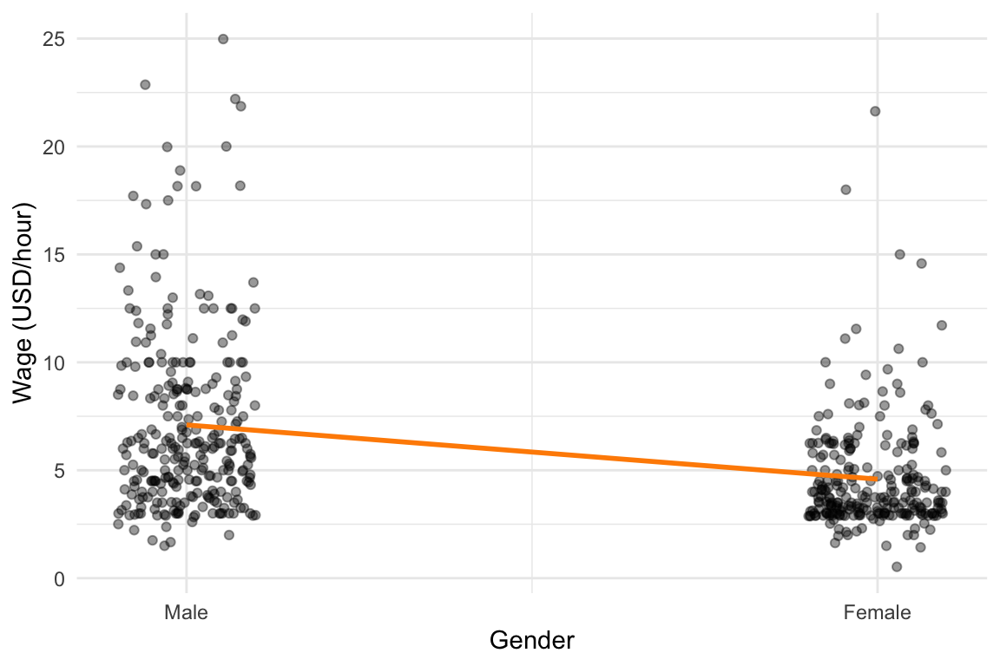
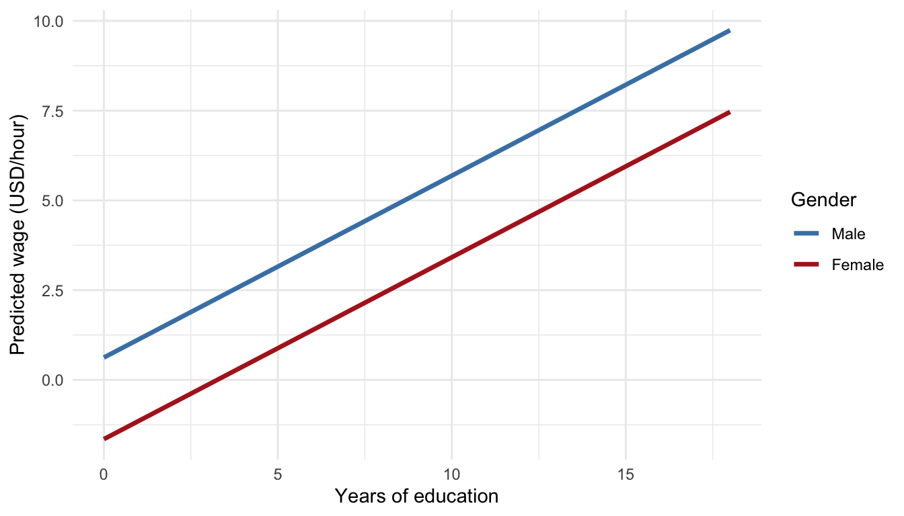

Call:
lm(formula = wage ~ female, data = wage_data)
Residuals:
Min 1Q Median 3Q Max
-5.5995 -1.8495 -0.9877 1.4260 17.8805
Coefficients:
Estimate Std. Error t value Pr(>|t|)
(Intercept) 7.0995 0.2100 33.806 < 2e-16 ***
female -2.5118 0.3034 -8.279 1.04e-15 ***
---
Signif. codes: 0 '***' 0.001 '**' 0.01 '*' 0.05 '.' 0.1 ' ' 1
Residual standard error: 3.476 on 524 degrees of freedom
Multiple R-squared: 0.1157, Adjusted R-squared: 0.114
F-statistic: 68.54 on 1 and 524 DF, p-value: 1.042e-1530 Categorical Variables in Regression
Up to this point, we have focused on regression models involving quantitative (numerical) predictors, such as age, income, or temperature—variables that have an inherent numeric scale and can be interpreted in terms of magnitudes and differences.
However, many important characteristics in real-world data are qualitative or categorical in nature. For example, whether a person is male or female, whether a worker belongs to a union, or which region or country an observation comes from. These variables do not carry numeric meaning on their own, yet they can have a significant influence on the outcome we are modeling.
To include such variables in a regression framework, we introduce the concept of dummy variables. A dummy variable is a binary indicator—usually coded as 0 or 1—that allows us to represent membership in a particular category. For example, a variable for gender might be coded as 1 for male and 0 for female (or vice versa). More complex categorical variables with more than two levels—such as political affiliation or region—can be handled by creating multiple dummy variables.
Moreover, we often want to explore whether the effect of one variable depends on the level of another; for instance, whether the effect of education on wages differs between men and women. In such cases, we use interaction terms, which allow the slope of one predictor to vary across categories defined by another.
This section introduces how to incorporate categorical information into regression models using dummy variables, and how to extend these models with interaction terms to capture more nuanced relationships in the data.
30.1 Dummy Variables
In regression analysis, not all explanatory variables are numerical. Some variables are categorical or qualitative, such as gender, region, or housing type, which cannot be directly entered into a regression equation in their raw form. To include these in a linear model, we convert them into dummy variables.
A dummy variable is a binary (0/1) variable that indicates the presence or absence of a particular category. For instance, consider a variable like gender with two categories: “man” and “woman”. We can recode this into a dummy variable where:
- 0 = man
- 1 = woman
This new variable can then be used in the regression model as if it were a standard numerical predictor. The coefficient for the dummy variable represents the average difference in the response variable between the two groups—controlling for any other variables in the model.
30.1.1 More Than Two Categories
If a categorical variable has more than two categories, say, housing type with values like “rental apartment,” “condominium,” “detached house,” and “other”, we cannot capture it with a single dummy. Instead, we create multiple dummy variables. A rule of thumb is that a variable with \(c\) categories requires \(c - 1\) dummy variables. Each of these represents one of the categories, and the category that is not included serves as the reference group.
For example, if we choose “rental apartment” as the reference group, the model might include:
-
condo: 1 if condominium, 0 otherwise
-
house: 1 if detached house, 0 otherwise
-
other: 1 if other form of housing, 0 otherwise
The intercept in the regression now represents the expected value for the reference group, and each dummy variable’s coefficient tells us how much the average differs for that group relative to the reference.
Example 30.1: Modeling House Price
To see how dummy variables work in practice, consider the following example. Suppose we are interested in modeling the selling price of houses (measured in units of 100000 EUR). Alongside numerical predictors such as living area (\(x_1\)) and lot size (\(x_2\)), we also suspect that the presence of a garage affects the selling price.
Since garage is a categorical variable with two levels; either a house has a garage or it doesn’t, we introduce a dummy variable \(x_3\), defined as:
- \(x_3 = 1\) if the house has a garage
- \(x_3 = 0\) if the house does not have a garage
This allows us to include garage status in a standard linear regression model:
\[ y = \beta_0 + \beta_1 x_1 + \beta_2 x_2 + \beta_3 x_3 + \varepsilon \]
We then estimate this model using data from a sample of 20 houses. The estimated regression equation is:
\[ \hat{y} = -5.98 + 0.104x_1 + 0.243x_2 + 2.22x_3 \]
Each coefficient in the regression model has a specific interpretation:
The coefficient \(b_1 = 0.104\) means that, holding lot size and garage status constant, each additional square meter of living space increases the expected selling price by approximately 10400 EUR.
Similarly, \(b_2 = 0.243\) tells us that, keeping living area and garage status fixed, an additional 100 square meters of lot area increases the expected selling price by about 24300 EUR.
The coefficient for the dummy variable, \(b_3 = 2.22\), represents the average difference in price between houses with and without a garage, after adjusting for differences in living area and lot size. Specifically, houses with a garage sell for approximately 222000 EUR more than comparable houses without a garage.
This example shows how dummy variables allow us to quantify the effect of qualitative features, like garage presence, in a regression framework. They make it possible to estimate how much categories like “has garage” contribute to the outcome, while controlling for other factors in the model.
30.1.2 Interpreting a Regression Model with a Dummy
Suppose we model the response variable \(y\) (e.g., price, income, or score) as a function of a quantitative variable \(x_1\) (e.g., experience or education) and a dummy variable \(x_2\), such as gender (where \(x_2 = 0\) for men and \(x_2 = 1\) for women). The estimated regression model is:
\[ \hat{y} = b_0 + b_1 x_1 + b_2 x_2 \]
To interpret the effect of the dummy variable, we substitute its two possible values into the equation:
When \(x_2 = 0\) (e.g., for men): \[ \hat{y} = b_0 + b_1 x_1 + b_2 \underbrace{x_2}_{=0} = b_0 + b_1 x_1 \]
When \(x_2 = 1\) (e.g., for women): \[ \hat{y} = b_0 + b_1 x_1 + b_2\underbrace{x_2}_{=1} = b_0 + b_1 x_1 + b_2 = (b_0 + b_2) + b_1 x_1 \]
Thus, the two groups share the same slope (\(b_1\)), but have different intercepts:
- Group 0: intercept is \(b_0\)
- Group 1: intercept is \(b_0 + b_2\)
In other words, the dummy variable shifts the regression line vertically, but does not change the slope of the relationship between \(x_1\) and \(y\).
Example 30.2: Gender Differences in Wages
This example investigates whether there is a difference in wages between men and women using data from the wage1 dataset in the wooldridge package.
The regression model includes a dummy variable for gender:
\[ y = \beta_0 + \beta_1 x + \varepsilon \]
where
-
\(y\) is
wage -
\(x_1\) is
gendertaking on value1if the respondent is a woman, and0if a man.
The estimated model is:
\[ \hat{y} = 7.10 - 2.51 \cdot x_1 \] as seen from output below.
Interpretation:
- The intercept (7.10) represents the average hourly wage for men (gender = 0).
- The coefficient for gender (-2.51) indicates that, on average, women earn $2.51 less per hour than men.
The overall line is visualized below:

The above model does not control for any other variables, such as education. Now, we add educ (years of education) to the model as estimate as:
\[ \hat{y} = b_0 + b_1 \cdot x_1 + b_2 \cdot x_2 \] with coefficients shown in the below output:
Call:
lm(formula = wage ~ female + educ, data = wage_data)
Residuals:
Min 1Q Median 3Q Max
-5.9890 -1.8702 -0.6651 1.0447 15.4998
Coefficients:
Estimate Std. Error t value Pr(>|t|)
(Intercept) 0.62282 0.67253 0.926 0.355
female -2.27336 0.27904 -8.147 2.76e-15 ***
educ 0.50645 0.05039 10.051 < 2e-16 ***
---
Signif. codes: 0 '***' 0.001 '**' 0.01 '*' 0.05 '.' 0.1 ' ' 1
Residual standard error: 3.186 on 523 degrees of freedom
Multiple R-squared: 0.2588, Adjusted R-squared: 0.256
F-statistic: 91.32 on 2 and 523 DF, p-value: < 2.2e-16Now, the estimated coefficient on female is -2.27, which still indicates a wage gap, but slightly smaller. This suggests that some of the wage difference was due to differences in education levels between men and women.
The interpretation of the coefficients:
- Intercept (\(b_0\)): Predicted wage for a male with 0 years of education.
- Gender (\(b_1\)): Women earn 2.27 USD less on average, holding education constant.
- Education (\(b_2\)): Each additional year of education increases expected wage by approximately the amount given by the coefficient.
To make it clear that the two gender‐specific lines share the same slope (for education) but have different intercepts, we visualize both lines given different values of the dummy (gender):

This plot illustrates two parallel regression lines; one for each group defined by the dummy variable \(x_1\). The lines are parallel because they have the same slope, but they are vertically separated because they have different intercepts. The vertical gap represents the coefficient \(b_2\), which quantifies the average difference between the two groups, after adjusting for \(x_1\).
This example demonstrates how dummy variables allow us to estimate group differences (in this case, by gender) and how those estimates change when we control for additional variables like education.
A simple model showed a gender wage gap of USD2.51/hour. After controlling for education, the gap decreased to USD2.27/hour, but remained statistically significant highlighting the value of including relevant covariates in a regression model.